<meta charset="utf-8"><title>11/28午後のコラム note貼り付け</title>
<style>
/* one column of numbered paste steps; text steps vs image steps differ by marker */
:root{--bg:#F5F4F0;--card:#FFFFFF;--ink:#1D2321;--mute:#5F665F;--line:#DCDAD2;--btn:#1F5FBF;--btnok:#2E8B4F;--img:#E9F3EC;--imgink:#22663B;--sans:'IBM Plex Sans JP','Hiragino Sans','Noto Sans JP',sans-serif}
@media (prefers-color-scheme:dark){:root:not([data-theme="light"]){--bg:#171A19;--card:#202423;--ink:#ECEDE8;--mute:#A3AAA2;--line:#343937;--btn:#4D8BE6;--btnok:#3FA866;--img:#1E2C23;--imgink:#8FD3A6;color-scheme:dark}}
:root[data-theme="dark"]{--bg:#171A19;--card:#202423;--ink:#ECEDE8;--mute:#A3AAA2;--line:#343937;--btn:#4D8BE6;--btnok:#3FA866;--img:#1E2C23;--imgink:#8FD3A6;color-scheme:dark}
body{background:var(--bg);color:var(--ink);font-family:var(--sans);font-size:15px;line-height:1.75;padding:20px 16px 60px}
main{max-width:680px;margin:0 auto;display:grid;gap:28px}
header h1{font-size:22px;margin:0 0 6px;text-wrap:balance}
header p{margin:0;color:var(--mute);font-size:14px}
nav{display:flex;gap:8px;flex-wrap:wrap;margin-top:12px}
nav a{border:1px solid var(--line);border-radius:999px;padding:4px 14px;color:var(--ink);text-decoration:none;font-size:14px;background:var(--card)}
.part h2{font-size:18px;line-height:1.5;margin:0 0 12px;text-wrap:balance;display:flex;gap:10px;align-items:baseline;flex-wrap:wrap}
.tag{font-size:13px;background:var(--ink);color:var(--bg);border-radius:6px;padding:1px 9px}
.steps{list-style:none;margin:0;padding:0;display:grid;gap:12px}
.st{background:var(--card);border:1px solid var(--line);border-radius:12px;padding:12px;min-width:0}
.hd{display:flex;align-items:center;gap:8px;margin-bottom:8px}
.no{width:26px;height:26px;border-radius:50%;background:var(--btn);color:#fff;display:inline-flex;align-items:center;justify-content:center;font-size:13px;font-weight:700;flex:0 0 26px}
.im .no{background:var(--btnok)}
.hd em{font-style:normal;font-size:12px;background:var(--img);color:var(--imgink);border-radius:6px;padding:0 8px}
.bx{font-size:13.5px;line-height:1.7;border:1px solid var(--line);border-radius:8px;padding:8px 10px;max-height:110px;overflow:auto;overflow-wrap:anywhere}
.bx.tall{max-height:150px}.bx p{margin:0 0 6px}.bx h2{font-size:14px;margin:8px 0 4px}.bx a{color:var(--btn)}
.st img{display:block;width:100%;max-width:100%;border:1px solid var(--line);border-radius:8px}
.sub{font-size:12.5px;color:var(--mute);margin:6px 0 0}
.cp{width:100%;margin-top:8px;padding:12px;border:0;border-radius:10px;background:var(--btn);color:#fff;font:600 15px var(--sans);cursor:pointer}
.cp.ok{background:var(--btnok)}.cp.dl{background:var(--btnok)}.cp:focus-visible{outline:3px solid var(--ink);outline-offset:2px}
.xh{font-size:15px;margin:20px 0 10px}
.fb{font-size:13px;line-height:1.7;margin:8px 0 0;padding:8px 10px;border-radius:8px;background:var(--img);color:var(--imgink)}
.opts{display:grid;grid-template-columns:repeat(auto-fill,minmax(240px,1fr));gap:10px}
.opt{min-width:0}.opt img{display:block;width:100%;border:1px solid var(--line);border-radius:8px}
.ol{display:flex;align-items:center;gap:8px;margin-top:6px}.ol b{font-size:13px;flex:0 0 auto}.ol .on{font-size:12.5px;color:var(--mute);flex:1;min-width:0}.ol .cp{width:auto;flex:0 0 auto;padding:9px 14px}.ol .cp{margin:0;padding:9px}
.toast{font-size:13px;color:var(--mute);margin-top:6px}
</style>
<main><header><h1>11/28午後のコラム note貼り付け</h1><p>いま公開済みは7本です。青い番号は文章、緑は画像です。</p><nav><a href="#p1">1</a><a href="#p2">2</a><a href="#p3">3</a><a href="#p4">4</a><a href="#p5">5</a><a href="#p6">6</a><a href="#p7">7</a></nav></header><section class="part" id="p1"><h2><span class="tag">OFF GRID</span>角田のイタリアGP10位が確定　FIA、アウディの控訴を棄却</h2><p class="sub">サイトに公開：15:41</p><ol class="steps">
<li class="st im"><div class="hd"><span class="no">1</span><b>見出し画像</b><em>画像</em></div>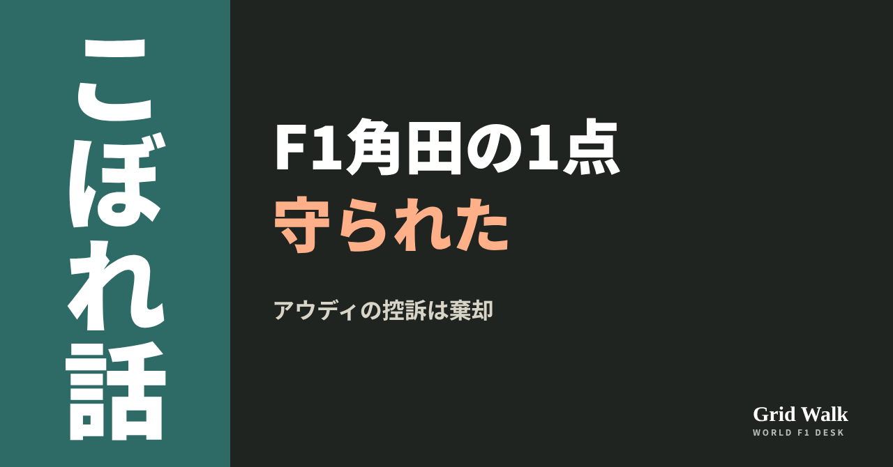<button class="cp dl" data-img="img/tsunoda-monza-tenth-confirmed-20261128.png" data-name="tsunoda-monza-tenth-confirmed-20261128_見出し画像.png">ダウンロード</button></li>
<li class="st"><div class="hd"><span class="no">2</span><b>タイトル</b></div><div class="bx" id="p1t">角田のイタリアGP10位が確定　FIA、アウディの控訴を棄却</div><button class="cp" data-plain="p1t">タイトルをコピー</button></li>
<li class="st"><div class="hd"><span class="no">3</span><b>本文</b></div><div class="bx tall" id="p1r"><p>カタールGPの予選を前に、角田裕毅の今季ただひとつの1点が確定しました。FIAの国際控訴裁判所が11月27日、イタリアGPの角田の10位をめぐるアウディの控訴を退けました。</p><p>FIAの決定の要点と元の記事へのリンク、角田の今季の読み解きへの案内はサイトで → <a href="https://f1gridwalk.github.io/lens/tsunoda-monza-tenth-confirmed-20261128/?utm_source=note&amp;utm_campaign=tsunoda-monza-tenth-confirmed-20261128">https://f1gridwalk.github.io/lens/tsunoda-monza-tenth-confirmed-20261128/?utm_source=note&amp;utm_campaign=tsunoda-monza-tenth-confirmed-20261128</a></p><p>FIAが公表した決定の主文によると、審理は11月25日、決定は27日にパリで出されました。控訴は受理したうえで内容を棄却し、イタリアGPのスチュワードの決定No.69（9月6日）を維持しました。アウディは返されない控訴の手数料を失い、手続きの費用も負担します。第三者として加わったレーシングブルズには、保証金が全額返されます。決定の理由は、後日知らせるとしています。サイトの要約は https://f1gridwalk.github.io/news/en-planetf1-audi-tsunoda-monza-appeal-rejected/ にあります。</p><h2>斜めに止まった22号車</h2><p>角田は2026年、レッドブルとレーシングブルズのテスト兼リザーブドライバーです。アイザック・ハジャーが欠場した夏の終わりの数戦は、リアム・ローソンがレッドブルに上がり、空いたレーシングブルズの席に角田が座りました。9月6日のイタリアGPも、その代役としての出走でした（F1公式の結果）。</p><p>F1公式によると、2周目のクラッシュで赤旗が出て、レースはスタンディングスタートでやり直しになりました。14番グリッドに並ぶはずの角田は（PlanetF1）、はじめ反対側に向かい、向きを変えて自分の枠に入りました。車は斜めになっていて、レースディレクターが追加のフォーメーションラップを命じました。スチュワードの文書では、その位置の車でスタートさせることに納得できなかったと説明しています（F1公式）。</p><p>スチュワードは、追加の周はレースディレクターの判断から生まれたものだとして、処分なしとしました。角田が追加の周の原因だとチームに知らされておらず、ピットレーンからのスタートを指示できなかったことも挙げています（F1公式）。</p><h2>アウディが求めた罰</h2><p>アウディは9月9日に控訴しました（PlanetF1）。根拠は2026年のスポーツ規則B5.9.4条で、アウディはストップ＆ゴーの罰が必要だったと主張していました（PlanetF1）。</p><p>F1公式の結果では、角田は10位で、11位のガブリエル・ボルトレートとの差は7秒、ニコ・ヒュルケンベルグが12位でした。決定のあとのアウディの声明です。</p><blockquote><p>「結果には深く驚いている。判決の全文が届いたら、より詳しく検討する」（アウディ、PlanetF1／イギリス）</p></blockquote><h2>7位争いは3点差のまま</h2><p>F1公式のコンストラクターズの順位表（11月28日に確認）では、ラスベガスGPを終えて、ハースが31点で7位、アウディが28点で8位です。控訴が認められていれば、アウディは29点で、差は2点になっていました（編集部の計算）。7位争いの話は https://f1gridwalk.github.io/lens/haas-audi-seventh-place-20261125/ で紹介しています。</p><p>編集部としては、残り2戦で3点差を追うアウディにとって、この1点は差を縮める数少ない手段の一つだったと見ています。角田にとっては、代役の3戦で手にした1点が、レースから82日後に確定したことになります（日付からの計算）。角田の今季は、読み解き https://f1gridwalk.github.io/topics/tsunoda-mentality-always-f1/ と人物ページ https://f1gridwalk.github.io/deep/rules/person-yuki-tsunoda/ で。</p><p><strong>追加の周の原因は、角田かレースディレクターの判断か。スチュワードと控訴裁判所の結論に、あなたは納得しますか？</strong></p><p>━━━━━━━━━━</p><p><strong>F1 Grid Walk では、世界のF1ニュースを毎日日本語でまとめています。</strong></p><p>海外の記事の要約を、毎日載せています。</p><p><a href="https://f1gridwalk.github.io/">https://f1gridwalk.github.io/</a></p><p>ほかの海外記事も読みたい方は、F1 Grid Walkへ。</p><p><a href="https://f1gridwalk.github.io/lens/tsunoda-monza-tenth-confirmed-20261128/">https://f1gridwalk.github.io/lens/tsunoda-monza-tenth-confirmed-20261128/</a></p><p>━━━━━━━━━━</p><p><a href="https://www.fia.com/sites/default/files/documents/ica-2026-14-2026-11-27-ica_decision_en_operative_part-web.pdf">出典：FIA（国際）</a></p><p><a href="https://www.planetf1.com/news/fia-audi-yuki-tsunoda-appeal">出典：PlanetF1（イギリス）</a></p><p><a href="https://www.formula1.com/en/latest/article/audi-lodge-intention-to-appeal-over-yuki-tsunoda-decision-in-italian-gp.70YzooUbxrwZnGgt98pqRk">出典：F1公式サイト（イギリス）</a></p><p><a href="https://www.formula1.com/en/results/2026/races/1293/italy/race-result">出典：F1公式サイト（イギリス）</a></p><p><a href="https://www.formula1.com/en/results/2026/team">出典：F1公式サイト（イギリス）</a></p></div><button class="cp" data-rich="p1r">本文をコピー</button></li>
<li class="st"><div class="hd"><span class="no">4</span><b>ハッシュタグ</b></div><div class="bx" id="p1h">#F1 #F1jp #角田裕毅 #レーシングブルズ #アウディ #イタリアGP #FIA #F1こぼれ話 #OFFGRID</div><button class="cp" data-plain="p1h">タグをコピー</button></li>
</ol><h3 class="xh">X</h3><ol class="steps">
<li class="st im"><div class="hd"><b>X用の画像</b><em>画像</em></div>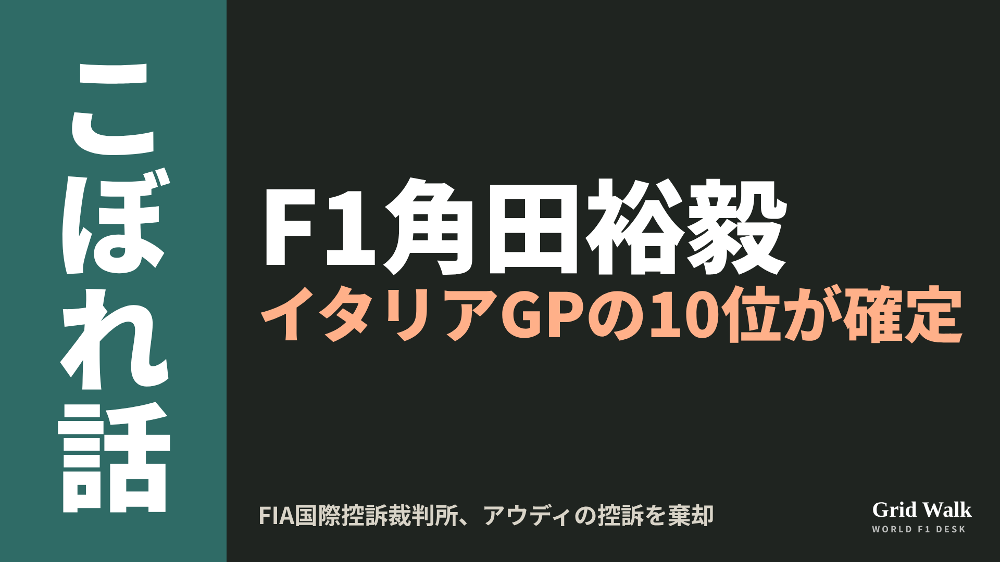<button class="cp dl" data-img="img/x_tsunoda-monza-tenth-confirmed-20261128.png" data-name="x_tsunoda-monza-tenth-confirmed-20261128.png">ダウンロード</button></li>
<li class="st"><div class="hd"><b>① noteをシェアするときの文</b></div><div class="bx" id="p1x0">イタリアGPで角田裕毅が代役で取った10位。アウディの控訴を、FIAの国際控訴裁判所が11月27日に退けました。決定文と、ハースとの7位争いへの影響をまとめました #F1jp #角田裕毅</div><button class="cp" data-plain="p1x0">コピー</button></li>
<li class="st"><div class="hd"><b>② ①への返信</b></div><div class="bx" id="p1x1">ほかの海外記事も読みたい方は、F1 Grid Walkへ。
https://f1gridwalk.github.io/lens/tsunoda-monza-tenth-confirmed-20261128/?utm_source=x&amp;utm_campaign=tsunoda-monza-tenth-confirmed-20261128</div><button class="cp" data-plain="p1x1">コピー</button></li>
<li class="st"><div class="hd"><b>③ ②への返信</b></div><div class="bx" id="p1x2">毎日の海外F1ニュースは、日本語でこちらにまとめています。
https://f1gridwalk.github.io/</div><button class="cp" data-plain="p1x2">コピー</button></li>
</ol></section><section class="part" id="p2"><h2><span class="tag">OFF GRID</span>V6の開発凍結は2028年の第13戦から　トンバジスが日程を明言</h2><p class="sub">サイトに公開：15:39</p><ol class="steps">
<li class="st im"><div class="hd"><span class="no">1</span><b>見出し画像</b><em>画像</em></div>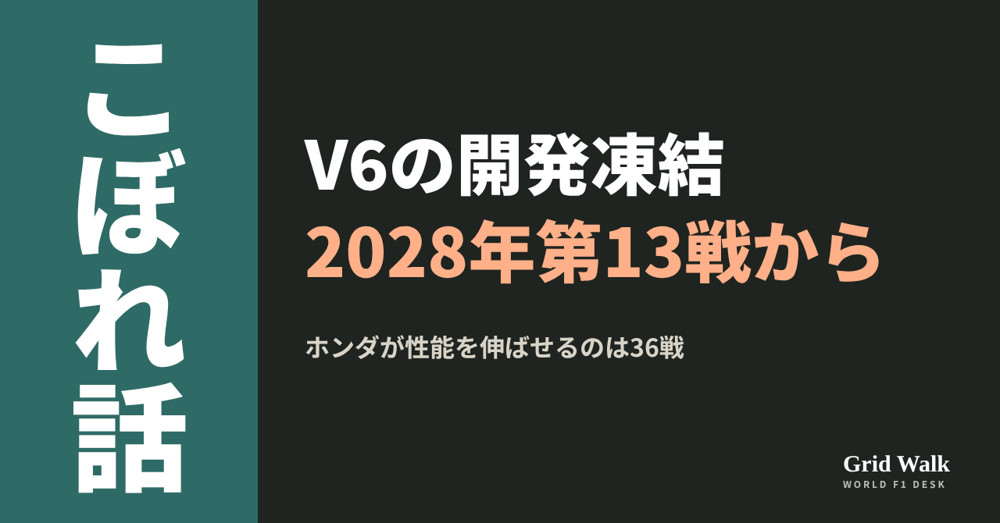<button class="cp dl" data-img="img/v6-freeze-2028-round13-20261128.png" data-name="v6-freeze-2028-round13-20261128_見出し画像.png">ダウンロード</button></li>
<li class="st"><div class="hd"><span class="no">2</span><b>タイトル</b></div><div class="bx" id="p2t">V6の開発凍結は2028年の第13戦から　トンバジスが日程を明言</div><button class="cp" data-plain="p2t">タイトルをコピー</button></li>
<li class="st"><div class="hd"><span class="no">3</span><b>本文</b></div><div class="bx tall" id="p2r"><p>今のパワーユニット（PU）の開発を、いつ止めるのか。その日程がはっきりしました。FIAのシングルシーター部門ディレクター、ニコラス・トンバジスがイギリスのAutosportの取材に答え、今のV6ハイブリッドの性能の開発は2028年シーズンの第13戦から凍結すると説明しました。記事は11月27日付です。イタリアのFormula1.itの記事の要約は https://f1gridwalk.github.io/news/it-formula1it-v8-freeze-timetable-tombazis/ にあります。</p><p>Formula1.itの記事の要約と、ADUOや開発の凍結の用語解説はサイトで → <a href="https://f1gridwalk.github.io/lens/v6-freeze-2028-round13-20261128/?utm_source=note&amp;utm_campaign=v6-freeze-2028-round13-20261128">https://f1gridwalk.github.io/lens/v6-freeze-2028-round13-20261128/?utm_source=note&amp;utm_campaign=v6-freeze-2028-round13-20261128</a></p><h2>第13戦からは信頼性の改良だけ</h2><p>Autosportによると、2028年の第13戦から先は信頼性のための改良だけが認められ、性能を上げる改良はできなくなります。Formula1.itは、今のPUは2029年末まで走ると書いています。2030年からは2.1リッターのV8ターボに変わる予定です。</p><p>次のV8の準備にも日付が置かれます。記事によると、エンジンの単気筒だけを台上で回す試験は2027年10月1日まで、V8を丸ごと回す台上試験は2028年7月1日まで禁止です。新しく来るメーカーは例外で、ゼネラルモーターズ（GM）はキャデラックのPUのシミュレーションの作業を早く始められるといいます。</p><blockquote><p>「コストの理由で避けたいのは、2つの計画を並行して抱えることだ」（トンバジス、Autosport／イギリス）</p></blockquote><p>いま速いメーカーが早めに開発をやめて次に移り、追う側が不利になることも避けたいとトンバジスは話しています。</p><h2>残る宿題はADUO</h2><p>凍結そのものは関係者すべてと合意済みだと、Autosportは書いています。残っているのは、遅れたメーカーに追加の改良を認めるADUO（ https://f1gridwalk.github.io/deep/rules/aduo/ ）の見直しです。</p><blockquote><p>「PUの枠組みに集中してきたので、正直に言うと、ADUOの面では少し遅れている」「誰かが凍結されて、ずっと下にいる、ということは避けたい」（トンバジス、Autosport／イギリス）</p></blockquote><p>その例として記事が名前を挙げたのがホンダです。凍結が始まるときに、ホンダのようなメーカーが大きく遅れたままになる事態を避けたいといいます。F1公式の順位表では、ホンダのPUを積むアストンマーティンはコンストラクターズ10位、7点です。</p><p>カタールの金曜のFIA会見では、レッドブルのローレン・メキース代表がV8への移行についてこう話しました。</p><blockquote><p>「おそらく、この5年、10年、15年で、僕たちがほぼ全員で一つの方向に合意した、珍しい瞬間の一つだと思う」（メキース、FIAの会見）</p></blockquote><p>メキースは、今のエンジンの凍結と、V8の作業を始めてよい日付が、その移行の案に入っているとも説明しています。Formula1.itによると、正式な承認は12月に上海で開かれる世界モータースポーツ評議会（ https://f1gridwalk.github.io/deep/rules/wmsc/ ）の見通しで、まだ決まったわけではありません。</p><h2>ホンダに残るのは36戦</h2><p>11月26日のOFF GRID https://f1gridwalk.github.io/lens/engine-freeze-honda-20261126/ では、凍結が実現すればホンダの追い上げに残る時間は約1年半と書きました。F1公式の2027年のカレンダーは全24戦です。2027年の開幕から2028年の第12戦までなら、性能を伸ばせるのは24戦と12戦で、合わせて36戦です（日程から編集部が計算）。2028年のカレンダーはまだ出ていません。Autosportは、第13戦は2028年7月1日ごろにあたると書いています。</p><p>編集部としては、ホンダにとっての締め切りは2030年ではなく、この36戦のあいだにどこまで差を詰められるかだと見ています。そのためには、ADUOがどう作り直されるかが、凍結の日付と同じくらい大事になりそうです。</p><p><strong>2028年の第13戦で開発を止める。凍結の前に、遅れたメーカーへの助けはどこまで手厚くするべきだと思いますか？</strong></p><p>━━━━━━━━━━</p><p><strong>F1 Grid Walk では、世界のF1ニュースを毎日日本語でまとめています。</strong></p><p>海外の記事の要約を、毎日載せています。</p><p><a href="https://f1gridwalk.github.io/">https://f1gridwalk.github.io/</a></p><p>ほかの海外記事も読みたい方は、F1 Grid Walkへ。</p><p><a href="https://f1gridwalk.github.io/lens/v6-freeze-2028-round13-20261128/">https://f1gridwalk.github.io/lens/v6-freeze-2028-round13-20261128/</a></p><p>━━━━━━━━━━</p><p><a href="https://www.autosport.com/f1/news/fia-details-f1-engine-freeze-and-imposes-testing-restrictions-ahead-of-v8-return/10878336/">出典：Autosport（イギリス）</a></p><p><a href="https://www.formula1.it/news/34269/1/f1-stop-allo-sviluppo-dei-v6-nel-2028-ecco-il-piano-dettagliato-per-il-ritorno-dei-v8">出典：Formula1.it（イタリア）</a></p><p><a href="https://www.fia.com/news/f1-2026-qatar-grand-prix-friday-press-conference-transcript">出典：FIA（国際）</a></p><p><a href="https://www.formula1.com/en/racing/2027">出典：F1公式サイト（イギリス）</a></p><p><a href="https://www.formula1.com/en/results/2026/team">出典：F1公式サイト（イギリス）</a></p></div><button class="cp" data-rich="p2r">本文をコピー</button></li>
<li class="st"><div class="hd"><span class="no">4</span><b>ハッシュタグ</b></div><div class="bx" id="p2h">#F1 #F1jp #ホンダ #アストンマーティン #パワーユニット #開発凍結 #ADUO #V8 #トンバジス #F1こぼれ話 #OFFGRID</div><button class="cp" data-plain="p2h">タグをコピー</button></li>
</ol><h3 class="xh">X</h3><ol class="steps">
<li class="st im"><div class="hd"><b>X用の画像</b><em>画像</em></div>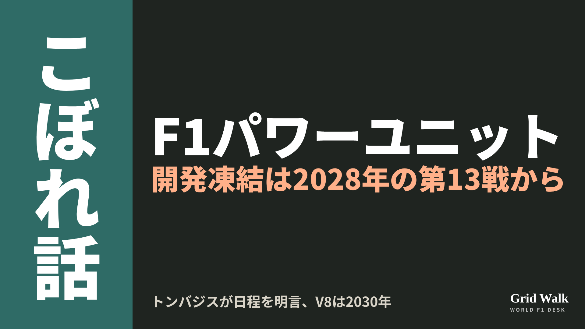<button class="cp dl" data-img="img/x_v6-freeze-2028-round13-20261128.png" data-name="x_v6-freeze-2028-round13-20261128.png">ダウンロード</button></li>
<li class="st"><div class="hd"><b>① noteをシェアするときの文</b></div><div class="bx" id="p2x0">今のV6の性能開発は2028年の第13戦で凍結。FIAのトンバジスが日程を明かしました。遅れているメーカーに残された時間は？ ホンダの視点でまとめました #F1jp #ホンダ</div><button class="cp" data-plain="p2x0">コピー</button></li>
<li class="st"><div class="hd"><b>② ①への返信</b></div><div class="bx" id="p2x1">ほかの海外記事も読みたい方は、F1 Grid Walkへ。
https://f1gridwalk.github.io/lens/v6-freeze-2028-round13-20261128/?utm_source=x&amp;utm_campaign=v6-freeze-2028-round13-20261128</div><button class="cp" data-plain="p2x1">コピー</button></li>
<li class="st"><div class="hd"><b>③ ②への返信</b></div><div class="bx" id="p2x2">毎日の海外F1ニュースは、日本語でこちらにまとめています。
https://f1gridwalk.github.io/</div><button class="cp" data-plain="p2x2">コピー</button></li>
</ol></section><section class="part" id="p3"><h2><span class="tag">OFF GRID</span>ルクレール「本当に、見つけないといけない外れ値があると思う」</h2><p class="sub">サイトに公開：15:37</p><ol class="steps">
<li class="st im"><div class="hd"><span class="no">1</span><b>見出し画像</b><em>画像</em></div>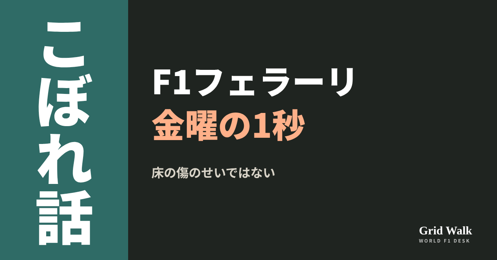<button class="cp dl" data-img="img/leclerc-something-unusual-qatar-20261128.png" data-name="leclerc-something-unusual-qatar-20261128_見出し画像.png">ダウンロード</button></li>
<li class="st"><div class="hd"><span class="no">2</span><b>タイトル</b></div><div class="bx" id="p3t">ルクレール「本当に、見つけないといけない外れ値があると思う」</div><button class="cp" data-plain="p3t">タイトルをコピー</button></li>
<li class="st"><div class="hd"><span class="no">3</span><b>本文</b></div><div class="bx tall" id="p3r"><p>第22戦カタールGPの金曜日、11月27日。フェラーリのシャルル・ルクレールは、2回のフリー走行をどちらも7番手で終えました。ルイス・ハミルトンはどちらも8番手です（F1公式）。Motorsport.comによると、ルクレールは走行のあと、こう語っています。</p><p>元の記事へのリンクと、金曜のフェラーリを伝えた記事の要約はサイトで → <a href="https://f1gridwalk.github.io/lens/leclerc-something-unusual-qatar-20261128/?utm_source=note&amp;utm_campaign=leclerc-something-unusual-qatar-20261128">https://f1gridwalk.github.io/lens/leclerc-something-unusual-qatar-20261128/?utm_source=note&amp;utm_campaign=leclerc-something-unusual-qatar-20261128</a></p><blockquote><p>「本当に、見つけないといけない外れ値があると思う」（ルクレール、Motorsport.com／イギリス）</p></blockquote><p>「外れ値」は、データの中でひとつだけ飛び抜けた値のこと。オランダのF1Maximaalも、この言葉を伝えています。</p><p>FIAの公式結果（決定文書21）で2回目のフリー走行（FP2）を見ると、トップはメルセデスのアンドレア・キミ・アントネッリで1分23秒077。2番手がジョージ・ラッセルで、3、4番手がマクラーレン、5、6番手がレッドブルの2台です。ルクレールは1分24秒099で、トップから1秒022遅れ。ハミルトンは1分24秒216で、1秒139遅れでした。</p><h2>床の傷のせいではない</h2><p>FP2が始まって間もなく、ルクレールはスピンして砂利に入り、車の床を傷めました。F1公式の記事で、本人はこう説明しています。</p><blockquote><p>「ここは、スペースがたくさんあるから、少し多めにリスクを取れるコーナーがいくつかあるコースだ。だから早めにアクセルを踏もうとして、車を失った」（ルクレール、F1公式／イギリス）</p></blockquote><p>Motorsport.comによると、ベストタイムはFP2の最初の周だったと思う、と本人は話しています。フェラーリは床を替えることにして、そのぶんかなりの時間を失いました。ただ、本人が問題にしているのは傷のことではありません。</p><blockquote><p>「けさの最初の周から、FP2の最後の周まで、とにかくすごく遅かった」「燃料が少なくても多くても。ふだんは燃料が多いときが僕たちの強みなのに、今日はまったく速さがなかった」（ルクレール、Motorsport.com／イギリス）</p></blockquote><p>F1公式の記事では、新しいソフトタイヤでもタイムを縮められなかったと話し、メルセデスについてこう続けています。</p><blockquote><p>「なぜか、メルセデスがみんなの予想よりずっと速い。だから差が少し奇妙なんだ」（ルクレール、F1公式／イギリス）</p></blockquote><h2>ハミルトンは終盤に止まる</h2><p>イタリアのMotorionlineによると、ハミルトンはFP2の終盤、ロングランの最中にパワーユニットが壊れ、1コーナーで車を止めました。これでバーチャル・セーフティカーが出ています。</p><blockquote><p>「FP1はわりと順調で、車の感触も悪くなかった」「残念ながら、ロングランの終わりごろに問題が出て、セッションが早く終わってしまった」（ハミルトン、F1公式／イギリス）</p></blockquote><p>スポーティングディレクターのディエゴ・イオベルノは、F1公式の記事でこう話しています。</p><blockquote><p>「ルイスには信頼性の問題が出ていて、いま調べている」「明日に向けての心配ではないが、このセッションにとっては確かに心配だった」（イオベルノ、F1公式／イギリス）</p></blockquote><p>ルクレールはこう話しています。</p><blockquote><p>「この先の心配だとは思わない。かなり古いパワーユニットで走っているから」（ルクレール、Motorsport.com／イギリス）</p></blockquote><p>編集部としては、金曜の1秒の差が、そのまま予選の差になるとはかぎらないと見ています。ルクレール自身、外れ値が何かはまだつかめていないと話しているからです。手がかりが見つかったかどうかは、日本時間28日23時30分からのFP3と、29日3時からの予選で見えてきます。元の記事の要約は https://f1gridwalk.github.io/news/nl-f1maximaal-leclerc-ferrari-qatar-something-unusual/ にあります。</p><p><strong>金曜にトップから1秒離されたフェラーリ。ルクレールの言う外れ値の正体は、予選までに見つかると思いますか？</strong></p><p>━━━━━━━━━━</p><p><strong>F1 Grid Walk では、世界のF1ニュースを毎日日本語でまとめています。</strong></p><p>海外の記事の要約を、毎日載せています。</p><p><a href="https://f1gridwalk.github.io/">https://f1gridwalk.github.io/</a></p><p>ほかの海外記事も読みたい方は、F1 Grid Walkへ。</p><p><a href="https://f1gridwalk.github.io/lens/leclerc-something-unusual-qatar-20261128/">https://f1gridwalk.github.io/lens/leclerc-something-unusual-qatar-20261128/</a></p><p>━━━━━━━━━━</p><p><a href="https://sports.yahoo.com/f1/articles/charles-leclerc-explains-qatar-gp-205217742.html">出典：Motorsport.com（Yahoo Sports転載）（イギリス）</a></p><p><a href="https://www.f1maximaal.nl/formule-1/leclerc-tast-in-het-duister-over-problemen-ferrari-in-qatar-we-hadden-dit-niet-verwacht">出典：F1Maximaal（オランダ）</a></p><p><a href="https://www.formula1.com/en/latest/article/it-looks-like-a-very-difficult-weekend-leclerc-searching-for-answers-after-tricky-friday-in-qatar.34CxxcaWerPPLl84sU9cZq">出典：F1公式サイト（イギリス）</a></p><p><a href="https://www.formula1.com/en/latest/article/what-the-teams-said-friday-in-qatar-2026.4NjrvUy3Zc6X6YN4i896S6">出典：F1公式サイト（イギリス）</a></p><p><a href="https://f1grandprix.motorionline.com/ferrari-difficolta-venerdi-qatar-leclerc-hamilton/">出典：Motorionline（イタリア）</a></p><p><a href="https://www.fia.com/system/files/decision-document/2026_qatar_grand_prix_-_free_practice_2_classification.pdf">出典：FIA（国際）</a></p><p><a href="https://www.formula1.com/en/racing/2026">出典：F1公式サイト（イギリス）</a></p></div><button class="cp" data-rich="p3r">本文をコピー</button></li>
<li class="st"><div class="hd"><span class="no">4</span><b>ハッシュタグ</b></div><div class="bx" id="p3h">#F1 #F1jp #フェラーリ #ルクレール #ハミルトン #カタールGP #フリー走行 #F1こぼれ話 #OFFGRID</div><button class="cp" data-plain="p3h">タグをコピー</button></li>
</ol><h3 class="xh">X</h3><ol class="steps">
<li class="st im"><div class="hd"><b>X用の画像</b><em>画像</em></div>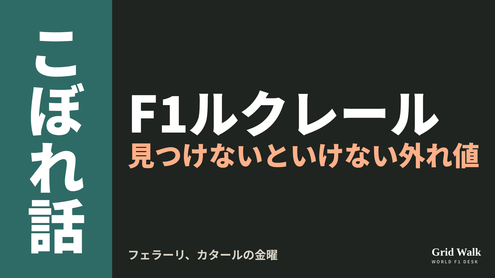<button class="cp dl" data-img="img/x_leclerc-something-unusual-qatar-20261128.png" data-name="x_leclerc-something-unusual-qatar-20261128.png">ダウンロード</button></li>
<li class="st"><div class="hd"><b>① noteをシェアするときの文</b></div><div class="bx" id="p3x0">カタールの金曜、フェラーリは7・8番手でトップから1秒以上。ルクレールは「本当に、見つけないといけない外れ値があると思う」と話しました #F1jp #フェラーリ</div><button class="cp" data-plain="p3x0">コピー</button></li>
<li class="st"><div class="hd"><b>② ①への返信</b></div><div class="bx" id="p3x1">ほかの海外記事も読みたい方は、F1 Grid Walkへ。
https://f1gridwalk.github.io/lens/leclerc-something-unusual-qatar-20261128/?utm_source=x&amp;utm_campaign=leclerc-something-unusual-qatar-20261128</div><button class="cp" data-plain="p3x1">コピー</button></li>
<li class="st"><div class="hd"><b>③ ②への返信</b></div><div class="bx" id="p3x2">毎日の海外F1ニュースは、日本語でこちらにまとめています。
https://f1gridwalk.github.io/</div><button class="cp" data-plain="p3x2">コピー</button></li>
</ol></section><section class="part" id="p4"><h2><span class="tag">OFF GRID</span>アントネッリのロングランは1周約1秒速い？　カタール金曜の試算</h2><p class="sub">サイトに公開：15:35</p><ol class="steps">
<li class="st im"><div class="hd"><span class="no">1</span><b>見出し画像</b><em>画像</em></div>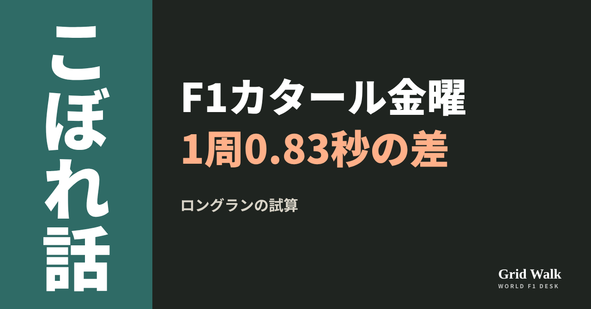<button class="cp dl" data-img="img/antonelli-longrun-one-second-20261128.png" data-name="antonelli-longrun-one-second-20261128_見出し画像.png">ダウンロード</button></li>
<li class="st"><div class="hd"><span class="no">2</span><b>タイトル</b></div><div class="bx" id="p4t">アントネッリのロングランは1周約1秒速い？　カタール金曜の試算</div><button class="cp" data-plain="p4t">タイトルをコピー</button></li>
<li class="st"><div class="hd"><span class="no">3</span><b>本文</b></div><div class="bx tall" id="p4r"><p>カタールGPの金曜、決勝を想定した長い連続走行（ロングラン）でも、メルセデスのアンドレア・キミ・アントネッリが抜けていた、という分析が出ました。ドイツのMotorsport-Total.comが11月27日に載せた試算で、補正後の差は、いちばん近いマックス・フェルスタッペン（レッドブル）でも1周あたり0.83秒です。サイトの要約は https://f1gridwalk.github.io/news/de-motorsporttotal-qatar-longruns-antonelli-one-second/ で。</p><p>タイヤ27周の上限のルールブックと、カタールの作戦を読んだコラム、元の記事へのリンクはサイトで → <a href="https://f1gridwalk.github.io/lens/antonelli-longrun-one-second-20261128/?utm_source=note&amp;utm_campaign=antonelli-longrun-one-second-20261128">https://f1gridwalk.github.io/lens/antonelli-longrun-one-second-20261128/?utm_source=note&amp;utm_campaign=antonelli-longrun-one-second-20261128</a></p><h2>数字はどう出したか</h2><p>記事は、金曜のロングランを、タイヤの種類とスティントの長さの違いで補正して比べたと説明しています。計算のくわしいやり方は書かれておらず、燃料の量やエンジンの設定の違いは練習のデータからは完全には取り除けない、とも断っています。以下は、あくまで記事の試算です。</p><p>補正後の1周あたりの差は、フェルスタッペン0.83秒、ジョージ・ラッセル（メルセデス）0.90秒、アイザック・ハジャー（レッドブル）1.02秒、ランド・ノリス（マクラーレン）1.24秒、オスカー・ピアストリ（マクラーレン）1.40秒。フェラーリはルイス・ハミルトンが3周、シャルル・ルクレールが2周だけで、記事は参考になりにくいとしています。中団ではレーシングブルズのアービッド・リンドブラッドが1.59秒で、アウディ以下は2.77秒より後ろでした。</p><h2>2番手は、1周ならラッセル、続けて走るとフェルスタッペン</h2><p>1周の速さでは並びが違います。FIAのFP2の公式結果（決定文書21）では、アントネッリが1分23秒077で最速、ラッセルが0.127秒差の2番手。ノリス、ピアストリ、フェルスタッペン、ハジャーが0.445〜0.506秒差で続きました。記事は、赤旗が重なったため予選を想定した走りから読めることは限られる、とも書いています。</p><p>それでもロングランでは、フェルスタッペンがラッセルの前に来ました。記事によると、レッドブルはタイヤの摩耗をマクラーレンよりうまく抑えていて、いまのところ決勝でメルセデスにいちばん迫れそうなのはレッドブルです。ただ、フェルスタッペンはまずラッセルに圧力をかけることが中心になりそうだ、と記事は見ています。</p><h2>27周の上限と、摩耗の大きいソフト</h2><p>今年のカタールは、タイヤ1セットで走れるのは週末を通して27周まで。メルセデス公式サイトの事前の案内によると、決勝は57周なので、全員が少なくとも2回はピットに入ります。決まりのしくみはルールブック https://f1gridwalk.github.io/deep/rules/tyre-stint-limit/ に、早すぎるピットの落とし穴はコラム https://f1gridwalk.github.io/lens/qatar-three-stop-trap-20261127/ にあります。</p><p>記事は、上限がなくても2ストップになりそうだと見ています。とくに摩耗が悪かったのはソフトで、ミディアムでも1周あたり平均0.18秒落ちたといいます。ハードはガブリエル・ボルトレート（アウディ）ひとりが試し、1周あたり0.065秒の落ちでした。路面のグリップが上がれば、摩耗は週末のうちに小さくなりそうだ、とも書いています。</p><p>かりにラッセルとの1周0.90秒の差が27周続くと、計算では約24秒。ただ、燃料や設定の違いが残る練習の数字で、そのまま決勝の差になるわけではありません。</p><p>編集部としては、予選の前にいちばん気になるのは、フェルスタッペンとラッセルの差が計算で0.07秒しかないことだと見ています。アントネッリとの差より、この2人の差のほうが2番手争いを左右しそうだからです。答え合わせは、日本時間29日未明の予選と30日未明の決勝です。</p><p><strong>金曜のロングランで1周約1秒。あなたは、この差が決勝でもそのまま出ると思いますか？</strong></p><p>━━━━━━━━━━</p><p><strong>F1 Grid Walk では、世界のF1ニュースを毎日日本語でまとめています。</strong></p><p>海外の記事の要約を、毎日載せています。</p><p><a href="https://f1gridwalk.github.io/">https://f1gridwalk.github.io/</a></p><p>ほかの海外記事も読みたい方は、F1 Grid Walkへ。</p><p><a href="https://f1gridwalk.github.io/lens/antonelli-longrun-one-second-20261128/">https://f1gridwalk.github.io/lens/antonelli-longrun-one-second-20261128/</a></p><p>━━━━━━━━━━</p><p><a href="https://www.motorsport-total.com/formel-1/news/fast-eine-sekunde-vorsprung-antonelli-dominiert-die-katar-longruns-26112723">出典：Motorsport-Total.com（ドイツ）</a></p><p><a href="https://www.fia.com/system/files/decision-document/2026_qatar_grand_prix_-_free_practice_2_classification.pdf">出典：FIA（国際）</a></p><p><a href="https://www.mercedesamgf1.com/races/qatar-grand-prix-2026">出典：メルセデス公式（イギリス）</a></p><p><a href="https://www.formula1.com/en/racing/2026">出典：F1公式サイト（イギリス）</a></p></div><button class="cp" data-rich="p4r">本文をコピー</button></li>
<li class="st"><div class="hd"><span class="no">4</span><b>ハッシュタグ</b></div><div class="bx" id="p4h">#F1 #F1jp #カタールGP #アントネッリ #メルセデス #フェルスタッペン #ラッセル #ロングラン #タイヤ #F1こぼれ話 #OFFGRID</div><button class="cp" data-plain="p4h">タグをコピー</button></li>
</ol><h3 class="xh">X</h3><ol class="steps">
<li class="st im"><div class="hd"><b>X用の画像</b><em>画像</em></div>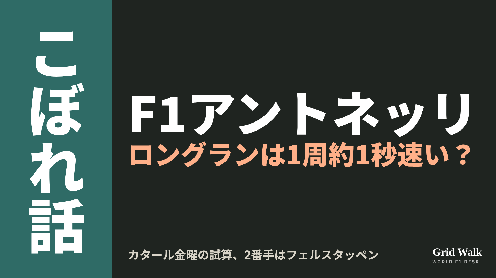<button class="cp dl" data-img="img/x_antonelli-longrun-one-second-20261128.png" data-name="x_antonelli-longrun-one-second-20261128.png">ダウンロード</button></li>
<li class="st"><div class="hd"><b>① noteをシェアするときの文</b></div><div class="bx" id="p4x0">カタール金曜のロングラン、補正後はアントネッリが1周約1秒速いという独サイトの試算。2番手はフェルスタッペン。予選前に数字で見ました #F1jp #カタールGP</div><button class="cp" data-plain="p4x0">コピー</button></li>
<li class="st"><div class="hd"><b>② ①への返信</b></div><div class="bx" id="p4x1">ほかの海外記事も読みたい方は、F1 Grid Walkへ。
https://f1gridwalk.github.io/lens/antonelli-longrun-one-second-20261128/?utm_source=x&amp;utm_campaign=antonelli-longrun-one-second-20261128</div><button class="cp" data-plain="p4x1">コピー</button></li>
<li class="st"><div class="hd"><b>③ ②への返信</b></div><div class="bx" id="p4x2">毎日の海外F1ニュースは、日本語でこちらにまとめています。
https://f1gridwalk.github.io/</div><button class="cp" data-plain="p4x2">コピー</button></li>
</ol></section><section class="part" id="p5"><h2><span class="tag">OFF GRID</span>メキース「限界を増幅してくれる」　フェルスタッペンを語る</h2><p class="sub">サイトに公開：15:33</p><ol class="steps">
<li class="st im"><div class="hd"><span class="no">1</span><b>見出し画像</b><em>画像</em></div>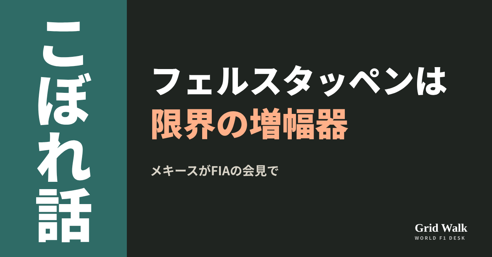<button class="cp dl" data-img="img/mekies-verstappen-amplifier-20261128.png" data-name="mekies-verstappen-amplifier-20261128_見出し画像.png">ダウンロード</button></li>
<li class="st"><div class="hd"><span class="no">2</span><b>タイトル</b></div><div class="bx" id="p5t">メキース「限界を増幅してくれる」　フェルスタッペンを語る</div><button class="cp" data-plain="p5t">タイトルをコピー</button></li>
<li class="st"><div class="hd"><span class="no">3</span><b>本文</b></div><div class="bx tall" id="p5r"><p>カタールGPの金曜日、FIAのチーム代表会見で、オランダのF1Maximaalの記者がレッドブルのローレン・メキース代表に聞きました。シーズン中の開発で、パワーユニットも含めて、マックス・フェルスタッペンの技術的な感想はどれだけ大事なのか。FIAの会見の書き起こしによると、答えはこうです。</p><p>FIAの会見の書き起こしと元の記事へのリンク、メキースの人物ページはサイトで → <a href="https://f1gridwalk.github.io/lens/mekies-verstappen-amplifier-20261128/?utm_source=note&amp;utm_campaign=mekies-verstappen-amplifier-20261128">https://f1gridwalk.github.io/lens/mekies-verstappen-amplifier-20261128/?utm_source=note&amp;utm_campaign=mekies-verstappen-amplifier-20261128</a></p><blockquote><p>「本当に、ものすごい競争上の強みだと感じている。だから私たちは彼を、車の中で最高のセンサーと呼んでいる。私たちのデータのシステムが教えてくれる前に、限界を見せてくれるからだ」（メキース、FIAの会見の書き起こし）</p></blockquote><blockquote><p>「そして彼は、限界を増幅してくれる。だから、それを突き止めるのが前ほど難しくなくなる」（同）</p></blockquote><h2>直し方は、まだ教えてくれない</h2><p>続けて、少し冗談もはさみました。</p><blockquote><p>「直し方の答えは、まだくれない。でも、次はそこまで成長してくれると期待している」「いや、まじめな話、ものすごい強みだ。車での速さとは別に、車で何が起きているのか、もっと速く走るために次に車に何をしてほしいのかを、あれほど敏感に感じ取れるのはね」（同）</p></blockquote><p>F1Maximaalは11月27日の記事の見出しで、フェルスタッペンは問題の増幅器だと伝えました（サイトの要約は https://f1gridwalk.github.io/news/nl-f1maximaal-mekies-verstappen-amplifier-comeback/ ）。メキースの人物ページは https://f1gridwalk.github.io/deep/rules/person-laurent-mekies/ で。</p><h2>1.5秒の遅れから、4強の争いへ</h2><p>同じ会見では、巻き返しと冬の準備も聞かれました。F1Maximaalは、レッドブルは今季の初めにメルセデスから大きく離れ、コースによっては1周1.5秒も遅れていたと書いています。</p><blockquote><p>「1.5秒とか1.3秒とか、速さで離されていた。レースのあとの月曜の朝に会社に戻ると、どのドアの向こうにも火が見えた」（メキース、FIAの会見の書き起こし）</p></blockquote><blockquote><p>「だから、私たちが戻ってこられたのは、100万の小さなことの積み重ねだった」（同）</p></blockquote><p>F1公式の順位表では、ラスベガスGPを終えて、レッドブルはコンストラクターズ3位の440点で、4位のマクラーレンとは9点差です。トップとの差が1.3〜1.4秒から0.3秒になった話は、コラム https://f1gridwalk.github.io/lens/mekies-red-bull-gap-20261116/ で紹介しました。それでも、メキースは来年を楽観していません。</p><blockquote><p>「それで来年に何かが約束されたのか？ まったくそんなことはない」「メルセデス対レッドブルのような、チームA対チームBの時代は終わった。今は、とても強いトップチームが4つある」「ほとんどのコースで、差は10分の1秒か10分の2秒の中だ。うまくやればポール、間違えればグリッドの7番手か8番手になる」（同）</p></blockquote><p>FIAの結果表では、金曜の2回目のフリー走行の上位6台は、メルセデス、マクラーレン、レッドブルが2台ずつで、1位のアントネッリから6位のハジャーまで0.506秒差。フェルスタッペンは5位でした。</p><h2>来年は、少し早めに</h2><p>メキースは、これから力をつけてくるチームにも触れ、上位が5チームか6チームになることに、F1全体で備えておく必要があるだろうと話しました。</p><blockquote><p>「あの争いに加わるチャンスを得るには、車体でもパワーユニットでも、こうしたリスクを取り続ける必要があると感じている」「今年は、パーティーに遅れて来たのは分かっている。来年は、もう少し時間どおりに来たい」（同）</p></blockquote><p>レッドブルの自社のパワーユニットについては、用語集 https://f1gridwalk.github.io/deep/rules/red-bull-powertrains/ で。編集部としては、センサーの話と遅れて来たという反省は、同じところにつながっていると見ています。データより先に限界を感じ取れるドライバーがいれば、来年の車の弱点にも早く手をつけられるかもしれないからです。</p><p><strong>来年のF1、上位は4チームのままだと思いますか？ それとも、メキースの言うように5〜6チームに増えるでしょうか？</strong></p><p>━━━━━━━━━━</p><p><strong>F1 Grid Walk では、世界のF1ニュースを毎日日本語でまとめています。</strong></p><p>海外の記事の要約を、毎日載せています。</p><p><a href="https://f1gridwalk.github.io/">https://f1gridwalk.github.io/</a></p><p>ほかの海外記事も読みたい方は、F1 Grid Walkへ。</p><p><a href="https://f1gridwalk.github.io/lens/mekies-verstappen-amplifier-20261128/">https://f1gridwalk.github.io/lens/mekies-verstappen-amplifier-20261128/</a></p><p>━━━━━━━━━━</p><p><a href="https://www.fia.com/news/f1-2026-qatar-grand-prix-friday-press-conference-transcript">出典：FIA（国際）</a></p><p><a href="https://www.f1maximaal.nl/formule-1/mekies-glundert-bij-vraag-over-verstappen-volgende-stap-in-zijn-transformatie">出典：F1Maximaal（オランダ）</a></p><p><a href="https://www.formula1.com/en/results/2026/team">出典：F1公式サイト（イギリス）</a></p><p><a href="https://www.fia.com/system/files/decision-document/2026_qatar_grand_prix_-_free_practice_2_classification.pdf">出典：FIA（国際）</a></p></div><button class="cp" data-rich="p5r">本文をコピー</button></li>
<li class="st"><div class="hd"><span class="no">4</span><b>ハッシュタグ</b></div><div class="bx" id="p5h">#F1 #F1jp #レッドブル #メキース #フェルスタッペン #カタールGP #2027年 #F1こぼれ話 #OFFGRID</div><button class="cp" data-plain="p5h">タグをコピー</button></li>
</ol><h3 class="xh">X</h3><ol class="steps">
<li class="st im"><div class="hd"><b>X用の画像</b><em>画像</em></div>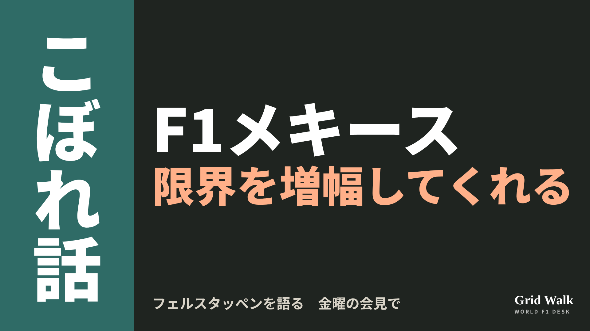<button class="cp dl" data-img="img/x_mekies-verstappen-amplifier-20261128.png" data-name="x_mekies-verstappen-amplifier-20261128.png">ダウンロード</button></li>
<li class="st"><div class="hd"><b>① noteをシェアするときの文</b></div><div class="bx" id="p5x0">レッドブルのメキース代表、フェルスタッペンについて「限界を増幅してくれる」。金曜の会見で語った車の作り方の話をまとめました #F1jp #レッドブル</div><button class="cp" data-plain="p5x0">コピー</button></li>
<li class="st"><div class="hd"><b>② ①への返信</b></div><div class="bx" id="p5x1">ほかの海外記事も読みたい方は、F1 Grid Walkへ。
https://f1gridwalk.github.io/lens/mekies-verstappen-amplifier-20261128/?utm_source=x&amp;utm_campaign=mekies-verstappen-amplifier-20261128</div><button class="cp" data-plain="p5x1">コピー</button></li>
<li class="st"><div class="hd"><b>③ ②への返信</b></div><div class="bx" id="p5x2">毎日の海外F1ニュースは、日本語でこちらにまとめています。
https://f1gridwalk.github.io/</div><button class="cp" data-plain="p5x2">コピー</button></li>
</ol></section><section class="part" id="p6"><h2><span class="tag">OFF GRID</span>カマラ「少し悲しい」　F2の王座争いよりF1を選んだ最終2戦</h2><p class="sub">サイトに公開：15:31</p><ol class="steps">
<li class="st im"><div class="hd"><span class="no">1</span><b>見出し画像</b><em>画像</em></div>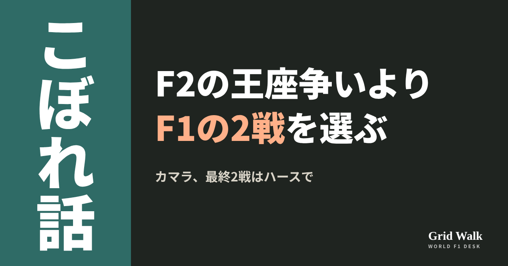<button class="cp dl" data-img="img/camara-f2-title-sad-20261128.png" data-name="camara-f2-title-sad-20261128_見出し画像.png">ダウンロード</button></li>
<li class="st"><div class="hd"><span class="no">2</span><b>タイトル</b></div><div class="bx" id="p6t">カマラ「少し悲しい」　F2の王座争いよりF1を選んだ最終2戦</div><button class="cp" data-plain="p6t">タイトルをコピー</button></li>
<li class="st"><div class="hd"><span class="no">3</span><b>本文</b></div><div class="bx tall" id="p6r"><p>ハースのラファエル・カマラが、F2の最後の2大会に出ずにF1のカタールGPとアブダビGPを走ることについて、カタールで報道陣に話しました（F1公式サイト）。</p><p>カマラの残り2戦の起用が決まった経緯と、ラスベガスの決勝の話はサイトで → <a href="https://f1gridwalk.github.io/lens/camara-f2-title-sad-20261128/?utm_source=note&amp;utm_campaign=camara-f2-title-sad-20261128">https://f1gridwalk.github.io/lens/camara-f2-title-sad-20261128/?utm_source=note&amp;utm_campaign=camara-f2-title-sad-20261128</a></p><blockquote><p>「この1年、王座を目指して取り組んできて、争える位置にいた」「この2つの週末を戦えないのは、少し悲しい。でも、さっきも言ったように、将来に向けては、自分をもっと準備のできた、何にでも備えられる状態にしてくれると思う」（カマラ、F1公式サイト／イギリス）</p></blockquote><p>FIAのF2の順位表（バクー大会まで、11月28日に確認）では、カマラが207点で首位です。ニコラ・ツォロフが200点で7点差、アレックス・ダンが189点で18点差で続きます。イギリスのRacingNews365によると、同じ週末にF1とF2の両方のレースに出ることはできず、例外は新人が走るF1のFP1だけです。</p><p>王座については、こう話しています。</p><blockquote><p>「確かに、何かとんでもないことが起きない限り（王者にはなれない）。決めるのは簡単ではなかった」（カマラ、RacingNews365／イギリス）</p></blockquote><p>F2の最終結果はまだ出ていません。F1公式サイトは、カマラの王座はライバル2人が2大会続けて点を伸ばせないかどうかにかかっている、と書いています。</p><h2>F1で変わったこと</h2><p>F1に来ていちばん違うことは何か。Motorsport-Totalによると、カマラが挙げたのはメディアの仕事でした。</p><blockquote><p>「本当に変わることのひとつは、こなすメディアの仕事の量だ」（カマラ、Motorsport-Total／ドイツ）</p></blockquote><p>同じ記事によると、地元ブラジルでのデビュー戦では、カマラへの取材の申し込みをハースがあえて絞り、小松礼雄代表が重圧を減らそうとしたといいます。車の中の違いについては、こう話しています。</p><blockquote><p>「Gの大きさも、パワーステアリングも、これまで経験したことのないものだ」「コースの外でエネルギーをたくさん使うと、コースの上で少し手いっぱいになるかもしれない」「週末ごとに、少し落ち着いて臨めるようになった。それがとても助けになる」（カマラ、Motorsport-Total／ドイツ）</p></blockquote><h2>小松代表「かけがえのない機会」</h2><p>11月27日の金曜、FIAのチーム代表会見で、小松代表は、F2に戻らずにハースで今季を終えるよう、どれだけ説得が必要だったかを聞かれました。</p><blockquote><p>「それほど要らなかった」「バクーのあと、彼は選手権の首位にいた」「F1に来たからには、来年への最高の準備は、この4戦を走ることだ」「ただの4戦ではない。まったく違う4つのサーキットで、課題も状況もまったく違う」「だから、かけがえのない機会だ」「本当は説得する必要もなかった。全員が同じ考えだ」（小松代表、FIA公式／国際）</p></blockquote><p>小松代表は、自由に選べるなら本人はF2を最後まで戦い王座を狙っただろうとも話しました。カタールの週末の体への負担は、冬の間に何をすべきかを本人に分からせるはずだといいます。同じ日のFP2で、カマラは17番手、チームメートのオリバー・ベアマンは18番手でした（FIA）。ラスベガスの決勝の様子は https://f1gridwalk.github.io/lens/albon-dns-perez-camara-20261122/ で、残り2戦の起用が決まった経緯は https://f1gridwalk.github.io/lens/haas-camara-final-races-20261123/ で紹介しています。</p><p>編集部としては、本人と小松代表が、ともにF2の王座への思いを認めたうえで、来年への準備という同じ理由を挙げている点が大事だと見ています。来季はベアマンと組むことが決まっています（ https://f1gridwalk.github.io/lens/bearman-haas-2027-confirmed-20261127/ ）。カタールGPの決勝は日本時間11月30日1時、最終戦アブダビGPは12月4〜6日です。</p><p><strong>F2の王座を争う位置にいながら、F1の周回を選んだカマラ。この4戦の経験は、来季のハースでどこに出ると思いますか？</strong></p><p>━━━━━━━━━━</p><p><strong>F1 Grid Walk では、世界のF1ニュースを毎日日本語でまとめています。</strong></p><p>海外の記事の要約を、毎日載せています。</p><p><a href="https://f1gridwalk.github.io/">https://f1gridwalk.github.io/</a></p><p>ほかの海外記事も読みたい方は、F1 Grid Walkへ。</p><p><a href="https://f1gridwalk.github.io/lens/camara-f2-title-sad-20261128/">https://f1gridwalk.github.io/lens/camara-f2-title-sad-20261128/</a></p><p>━━━━━━━━━━</p><p><a href="https://www.formula1.com/en/latest/article/obviously-not-easy-camara-reacts-to-decision-to-sacrifice-f2-title-challenge-for-haas-drive.ltxdSbb5ibvHqIXHBAMId">出典：F1公式サイト（イギリス）</a></p><p><a href="https://racingnews365.com/rafael-camara-explains-decision-to-abandon-f2-title-challenge">出典：RacingNews365（イギリス）</a></p><p><a href="https://www.formel1.de/news/grand-prix-berichte/2026-11-26/formel-1-statt-formel-2-titel-rafael-camara-ist-ein-bisschen-traurig">出典：Formel1.de（元はMotorsport-Total.com）（ドイツ）</a></p><p><a href="https://www.fia.com/news/f1-2026-qatar-grand-prix-friday-press-conference-transcript">出典：FIA（国際）</a></p><p><a href="https://api.fia.com/events/formula-2-championship/season-2026/standings">出典：FIA（国際）</a></p><p><a href="https://www.fia.com/system/files/decision-document/2026_qatar_grand_prix_-_free_practice_2_classification.pdf">出典：FIA（国際）</a></p><p><a href="https://www.formula1.com/en/racing/2026">出典：F1公式サイト（イギリス）</a></p></div><button class="cp" data-rich="p6r">本文をコピー</button></li>
<li class="st"><div class="hd"><span class="no">4</span><b>ハッシュタグ</b></div><div class="bx" id="p6h">#F1 #F1jp #カマラ #ハース #小松礼雄 #F2 #カタールGP #F1こぼれ話 #OFFGRID</div><button class="cp" data-plain="p6h">タグをコピー</button></li>
</ol><h3 class="xh">X</h3><ol class="steps">
<li class="st im"><div class="hd"><b>X用の画像</b><em>画像</em></div>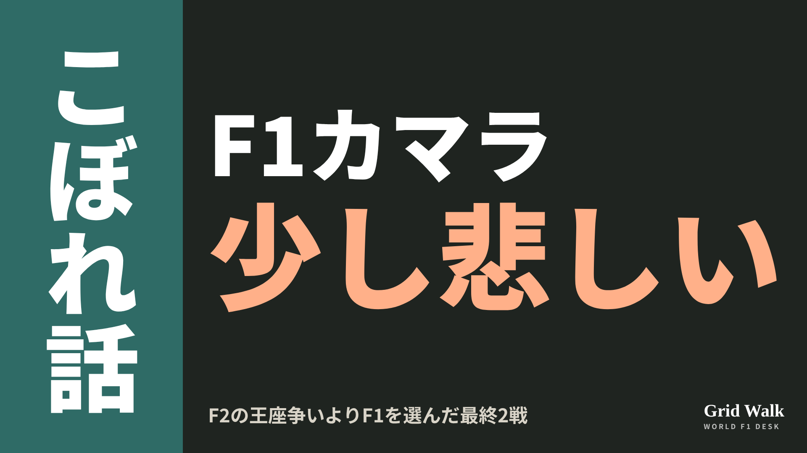<button class="cp dl" data-img="img/x_camara-f2-title-sad-20261128.png" data-name="x_camara-f2-title-sad-20261128.png">ダウンロード</button></li>
<li class="st"><div class="hd"><b>① noteをシェアするときの文</b></div><div class="bx" id="p6x0">F2でバクー大会まで首位のカマラ。最終2大会に出ずハースでF1を走ることに「少し悲しい」と話しました。小松代表の言葉も #F1jp #ハース</div><button class="cp" data-plain="p6x0">コピー</button></li>
<li class="st"><div class="hd"><b>② ①への返信</b></div><div class="bx" id="p6x1">ほかの海外記事も読みたい方は、F1 Grid Walkへ。
https://f1gridwalk.github.io/lens/camara-f2-title-sad-20261128/?utm_source=x&amp;utm_campaign=camara-f2-title-sad-20261128</div><button class="cp" data-plain="p6x1">コピー</button></li>
<li class="st"><div class="hd"><b>③ ②への返信</b></div><div class="bx" id="p6x2">毎日の海外F1ニュースは、日本語でこちらにまとめています。
https://f1gridwalk.github.io/</div><button class="cp" data-plain="p6x2">コピー</button></li>
</ol></section><section class="part" id="p7"><h2><span class="tag">OFF GRID</span>カタールもハートがフェルスタッペンの無線に　ランビアーゼ欠席</h2><p class="sub">サイトに公開：15:29</p><ol class="steps">
<li class="st im"><div class="hd"><span class="no">1</span><b>見出し画像</b><em>画像</em></div>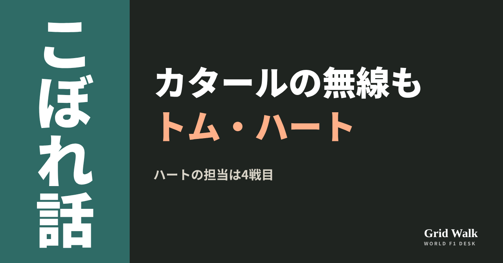<button class="cp dl" data-img="img/hart-verstappen-qatar-20261128.png" data-name="hart-verstappen-qatar-20261128_見出し画像.png">ダウンロード</button></li>
<li class="st"><div class="hd"><span class="no">2</span><b>タイトル</b></div><div class="bx" id="p7t">カタールもハートがフェルスタッペンの無線に　ランビアーゼ欠席</div><button class="cp" data-plain="p7t">タイトルをコピー</button></li>
<li class="st"><div class="hd"><span class="no">3</span><b>本文</b></div><div class="bx tall" id="p7r"><p>第22戦カタールGPの週末も、マックス・フェルスタッペンの無線から聞こえるのはトム・ハートの声です。長くレースエンジニアを務めてきたジャンピエロ・ランビアーゼが、個人的な事情でこのレースを欠席すると、イギリスのAutosportが11月26日に伝えました。</p><p>ハートの経歴をまとめた人物ページと、元の記事へのリンクはサイトで → <a href="https://f1gridwalk.github.io/lens/hart-verstappen-qatar-20261128/?utm_source=note&amp;utm_campaign=hart-verstappen-qatar-20261128">https://f1gridwalk.github.io/lens/hart-verstappen-qatar-20261128/?utm_source=note&amp;utm_campaign=hart-verstappen-qatar-20261128</a></p><p>レッドブルはAutosportに、本人の事情が許せば、ランビアーゼはアブダビで戻る見込みだと説明しています。</p><h2>最後の2戦は、ランビアーゼの予定だった</h2><p>ランビアーゼは、残りのカタールとアブダビで無線に戻る予定とされていました。Autosportによると、チームはハートが役目に慣れるよう、シーズン終盤は担当を交代する仕組みを取っていました。</p><p>これでハートの担当は、アメリカ、サンパウロ、ラスベガスに続いて4戦目になります。F1公式の結果では、アメリカは3位、サンパウロは21番手から2位。そしてラスベガスでフェルスタッペンが今季4勝目を挙げ、ハートにとってフェルスタッペンのレースエンジニアとして初めての優勝になりました。</p><p>金曜のFP2で、フェルスタッペンは5番手でした（FIAの結果表でトップから0.499秒差）。イギリスのPlanetF1によると、抜き返してきたルイス・ハミルトンが1コーナーの手前で前を横切り、フェルスタッペンはチームへの無線で「あっ。今の見た？ ブレーキングで。なんてことだ」と訴えました。スチュワードは措置なしとしました。</p><h2>実習生から、4冠を支えたガレージへ</h2><p>ハートの経歴（大学からレッドブルに入り、シミュレーター部門、フェルスタッペン側のパフォーマンスエンジニアへと進んだ道のり）は、人物ページにまとめています。</p><p>一時はウィリアムズでアレクサンダー・アルボンを担当する予定でした。11月26日のAutosportは、フェルスタッペンがチームの中で後任にハートを望み、移籍は取りやめになったと書いています。アメリカでは無線のつながりに問題が出たものの、ラスベガスではやりとりがずっと良くなったように見えたとAutosportは書き、フェルスタッペンもハートが「いい印象」を残していると話しています。人物ページは https://f1gridwalk.github.io/deep/rules/person-tom-hart/ で。</p><h2>2027年の席は、まだ報道の段階</h2><p>Autosportは、ランビアーゼは2027年、マクラーレンへ移る前にガーデニング休暇（移籍の前に仕事から離れる期間）に入る見通しで、ハートは2027年の開幕から正式なレースエンジニアになる可能性が非常に高いと伝えています。レッドブルはまだ正式には発表していません。</p><p>ヘッド・オブ・レーシングの役は、2027年の初めにアストンマーティンから来るトム・マッカローが引き継ぎます。9月にAutosportが伝えたレッドブルの発表です。人物ページは https://f1gridwalk.github.io/deep/rules/person-tom-mccullough/ で。</p><p>編集部としては、担当が1戦増えたことは、来季に向けた本番の練習が1回増えたという意味が大きいと見ています。高速コーナーが続くルサイルは、今季のレッドブルが必ずしも強くなかった種類のコースだと、フェルスタッペン自身が見ています（Autosport）。初めてのアメリカGPのときの話は、コラム https://f1gridwalk.github.io/lens/tom-hart-debut-20261026/ で。</p><p><strong>ランビアーゼからハートへ。無線の声が変わると、フェルスタッペンの戦い方も変わると思いますか？</strong></p><p>━━━━━━━━━━</p><p><strong>F1 Grid Walk では、世界のF1ニュースを毎日日本語でまとめています。</strong></p><p>海外の記事の要約を、毎日載せています。</p><p><a href="https://f1gridwalk.github.io/">https://f1gridwalk.github.io/</a></p><p>ほかの海外記事も読みたい方は、F1 Grid Walkへ。</p><p><a href="https://f1gridwalk.github.io/lens/hart-verstappen-qatar-20261128/">https://f1gridwalk.github.io/lens/hart-verstappen-qatar-20261128/</a></p><p>━━━━━━━━━━</p><p><a href="https://www.autosport.com/f1/news/verstappen-to-work-with-new-race-engineer-tom-hart-again-at-qatar-gp/10878044/">出典：Autosport（イギリス）</a></p><p><a href="https://www.planetf1.com/news/fia-decision-lewis-hamilton-max-verstappen-f1-2026-qatar-grand-prix">出典：PlanetF1（イギリス）</a></p><p><a href="https://www.autosport.com/f1/news/red-bull-signs-key-aston-martin-engineer-as-lambiase-replacement/10851434/">出典：Autosport（イギリス）</a></p><p><a href="https://www.fia.com/system/files/decision-document/2026_qatar_grand_prix_-_free_practice_2_classification.pdf">出典：FIA（国際）</a></p><p><a href="https://www.formula1.com/en/racing/2026">出典：F1公式サイト（イギリス）</a></p></div><button class="cp" data-rich="p7r">本文をコピー</button></li>
<li class="st"><div class="hd"><span class="no">4</span><b>ハッシュタグ</b></div><div class="bx" id="p7h">#F1 #F1jp #レッドブル #フェルスタッペン #トムハート #ランビアーゼ #カタールGP #レースエンジニア #F1こぼれ話 #OFFGRID</div><button class="cp" data-plain="p7h">タグをコピー</button></li>
</ol><h3 class="xh">X</h3><ol class="steps">
<li class="st im"><div class="hd"><b>X用の画像</b><em>画像</em></div>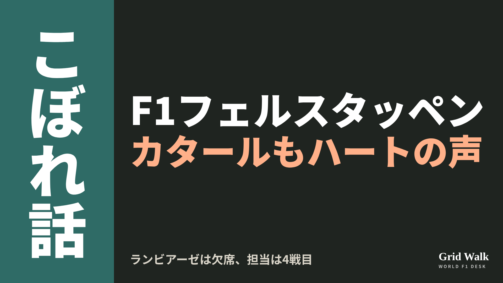<button class="cp dl" data-img="img/x_hart-verstappen-qatar-20261128.png" data-name="x_hart-verstappen-qatar-20261128.png">ダウンロード</button></li>
<li class="st"><div class="hd"><b>① noteをシェアするときの文</b></div><div class="bx" id="p7x0">カタールGPも、フェルスタッペンの無線はトム・ハート。ラスベガスで初優勝したエンジニアの4戦目です #F1jp #フェルスタッペン</div><button class="cp" data-plain="p7x0">コピー</button></li>
<li class="st"><div class="hd"><b>② ①への返信</b></div><div class="bx" id="p7x1">ほかの海外記事も読みたい方は、F1 Grid Walkへ。
https://f1gridwalk.github.io/lens/hart-verstappen-qatar-20261128/?utm_source=x&amp;utm_campaign=hart-verstappen-qatar-20261128</div><button class="cp" data-plain="p7x1">コピー</button></li>
<li class="st"><div class="hd"><b>③ ②への返信</b></div><div class="bx" id="p7x2">毎日の海外F1ニュースは、日本語でこちらにまとめています。
https://f1gridwalk.github.io/</div><button class="cp" data-plain="p7x2">コピー</button></li>
</ol></section></main><script>
function done(b,msg){const t=b.dataset.t||b.textContent;b.dataset.t=t;b.classList.add('ok');b.textContent=msg||'コピーしました';setTimeout(()=>{b.classList.remove('ok');b.textContent=t},2000)}
function selectEl(el){const r=document.createRange();r.selectNodeContents(el);const s=getSelection();s.removeAllRanges();s.addRange(r)}
async function rich(el,b){
  try{await navigator.clipboard.write([new ClipboardItem({'text/html':new Blob([el.innerHTML],{type:'text/html'}),'text/plain':new Blob([el.innerText],{type:'text/plain'})})]);done(b);return}catch(e){}
  selectEl(el);let ok=false;try{ok=document.execCommand('copy')}catch(e){}
  if(ok){getSelection().removeAllRanges();done(b)}else{done(b,'選択しました。コピーしてください')}}
async function plain(el,b){
  try{await navigator.clipboard.writeText(el.innerText);done(b);return}catch(e){}
  selectEl(el);let ok=false;try{ok=document.execCommand('copy')}catch(e){}
  if(ok){getSelection().removeAllRanges();done(b)}else{done(b,'選択しました。コピーしてください')}}
let dlns=null;(async()=>{try{dlns=await window.claude?.use?.("downloads")}catch(e){dlns=null}})();
async function img(src,b){
  b.dataset.t=b.dataset.t||b.textContent;
  if(!dlns){try{dlns=await window.claude?.use?.("downloads")}catch(e){}}
  if(!dlns){b.textContent='ダウンロードできませんでした';setTimeout(()=>{b.textContent=b.dataset.t},3500);return}
  try{const blob=await fetch(src).then(r=>r.blob());b.textContent='保存の確認を開いています…';
    await dlns.save({filename:b.dataset.name,data:blob});done(b,'ダウンロードしました')}
  catch(e){const c=e&&e.code;b.textContent=c==='declined'?'キャンセルしました':c==='rate_limited'?'少し待ってからもう一度押してください':'ダウンロードできませんでした';setTimeout(()=>{b.textContent=b.dataset.t},3500)}}
document.querySelectorAll('.cp').forEach(b=>b.addEventListener('click',()=>{
  if(b.dataset.rich)rich(document.getElementById(b.dataset.rich),b);
  else if(b.dataset.plain)plain(document.getElementById(b.dataset.plain),b);
  else img(b.dataset.img,b)}));
</script>